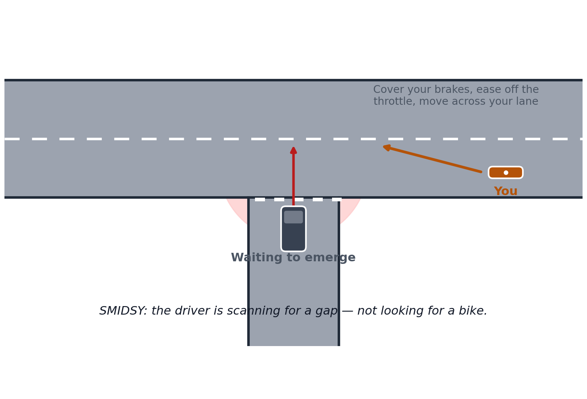
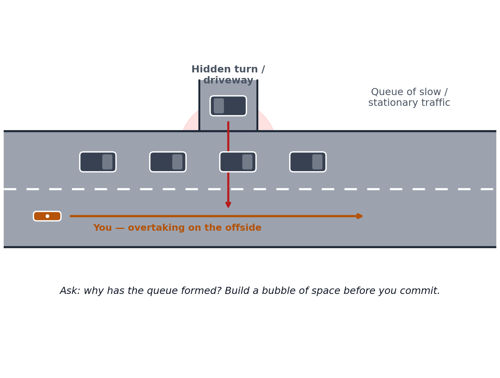
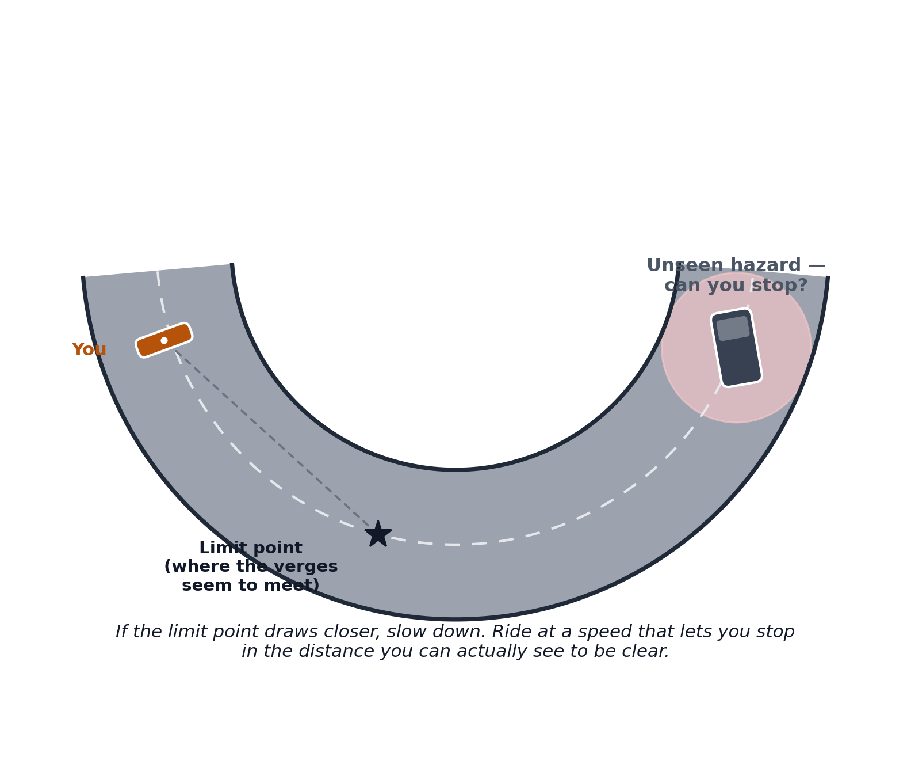
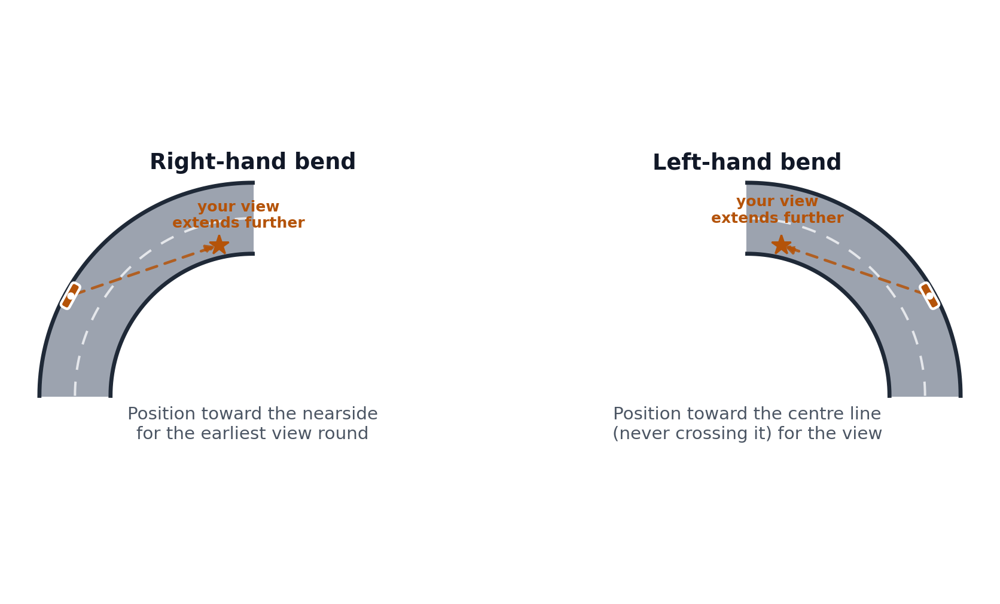

Free · For every rider · Not just our students
Rider Safety Information
Elite Bikers exists to reduce motorcycle crashes — and that doesn't start or end with a paid course. Everything on this page is free to read, free to share, and worth five minutes of any rider's time, however long you've been riding.
Following distance
The 2-Second and 4-Second Rule
Highway Code Rule 126 is simple: drive and ride at a speed — and a distance from the vehicle in front — that lets you stop well within the distance you can see to be clear. In practice, that's taught as a count.
Dry, clear conditions
The minimum gap to the vehicle in front on a dry road, in good visibility, at normal road speeds.
Wet roads
Double it. A wet road roughly doubles your braking distance, so double your following distance too.
Ice or packed snow
Allow up to ten times your normal dry-weather distance — grip can all but disappear without warning.
How to count it, on the move
Pick a fixed point ahead — a sign, a bridge, a lamppost. The moment the vehicle in front passes it, start counting: "one-thousand, two-thousand" (or "only a fool breaks the two-second rule"). Saying "one-thousand" at a normal pace takes about a second, so counting this way — rather than just saying "one, two" — is what keeps the count honest. If you reach your fixed point before you finish counting, you're following too closely — ease off and open the gap back up. For the 4-second check in the wet, simply keep counting to four-thousand.
Highway Code, Rule 126
Typical Stopping Distances
Stopping distance has two parts: thinking distance (how far you travel before you even react) and braking distance (how far you travel once you do). Both grow with speed — and not in a straight line.
| Speed | Thinking | Braking | Overall |
|---|---|---|---|
| 20 mph | 6 m | 6 m | 12 m |
| 30 mph | 9 m | 14 m | 23 m |
| 40 mph | 12 m | 24 m | 36 m |
| 50 mph | 15 m | 38 m | 53 m |
| 60 mph | 18 m | 55 m | 73 m |
| 70 mph | 21 m | 75 m | 96 m |
Figures are the Highway Code's typical dry-road distances for an alert rider with good brakes and tyres. A motorcycle's real-world braking distance is usually a little longer than a car's at the same speed — and tyre condition, road surface and your own alertness all affect it further.
The Highway Code
Signs and Markings: the System Behind Them
There are hundreds of official UK road signs — you don't need to memorise them all. What's worth knowing cold is the system behind them: shape and colour do almost all the talking.
Triangle, red border
A warning. Something's coming — a bend, a junction, ice, an animal crossing.
Circle, red border
An order. Usually a prohibition — no entry, no overtaking, a speed limit — that must be obeyed.
Solid blue circle
A positive instruction. Not a suggestion — "ahead only" means exactly that.
Rectangle
Information. Colour shows road type: blue for motorways, green for primary routes, white/black for local roads.
This is a working selection, not the full set. The complete, official list of UK road signs and markings is published free by DVSA as part of the Highway Code — see gov.uk/guidance/the-highway-code.
A visual guide
Spot the Hazard Before It Happens
Four scenarios worth picturing before you meet them on the road. Original diagrams, not technical drawings — the point is to fix the shape of the hazard in your mind.

Junctions
Being missed at a junction (SMIDSY)
A driver waiting to emerge is scanning for a gap in the traffic — not looking for a motorcycle. Assume you haven't been seen, cover your brakes, and watch the other vehicle's wheels rather than the driver's face.

Country roads
Overtaking a queue of traffic
A hidden driveway or turning partway along a queue is one of the most common places for a vehicle to cross your path without warning. Ask why the queue has formed before you commit.

Dangers on bends
Reading a bend: the limit point
The limit point is where the two verges of the road seem to meet. If it stays the same distance away, your speed is right. If it draws closer, slow down — there may be something waiting just out of sight.

Dangers on bends
Positioning for left- and right-hand bends
Position yourself for the earliest possible view into the bend — nearside for a right-hander, toward (never across) the centre line for a left-hander.
Why riders crash
Six Patterns Worth Knowing in Advance
Research and front-line experience shared freely by roadside trauma charities and police-led rider schemes shows that motorcycle crashes cluster around a small, repeating handful of situations.
Being missed at a junction
Still the single most common cause of riders being knocked off. Cover your brakes on the approach to any junction with a waiting vehicle.
Overtaking a queue
Someone in the queue may turn, U-turn, or pull out without warning. Build a bubble of space and overtake at a speed you can stop within.
Overtaking at a junction
Even blue-light riders avoid it. A vehicle slowing for no obvious reason may be about to turn across your path. Don't overtake at a junction — ever.
Getting it wrong on a bend
Almost always too much speed carried in for what's actually around it. Use the limit point, and slow down wherever there's any doubt.
Losing control through overconfidence
Crashes of this kind spike in spring, and cluster among experienced riders on bigger bikes. Be honest about how rusty, tired or distracted you are today.
Riding in a group
Being part of a group measurably increases crash risk — usually riders showing off, or someone at the back pushing to keep up. Ride your own ride.
Keep Learning
Take It Further
Reading about safe riding is a good start — nothing replaces time in the saddle with a qualified instructor watching your riding and feeding it back to you.
Beyond this page
Want this built into real, hands-on skill?
Reading about following distances and limit points is a start. An observed ride with proper feedback is how it actually sticks.
View courses & pricesThis page is general guidance for educational purposes and does not replace hands-on instruction from a qualified rider trainer. Every rider is solely and personally responsible for their own ride, actions, and safety on the road.